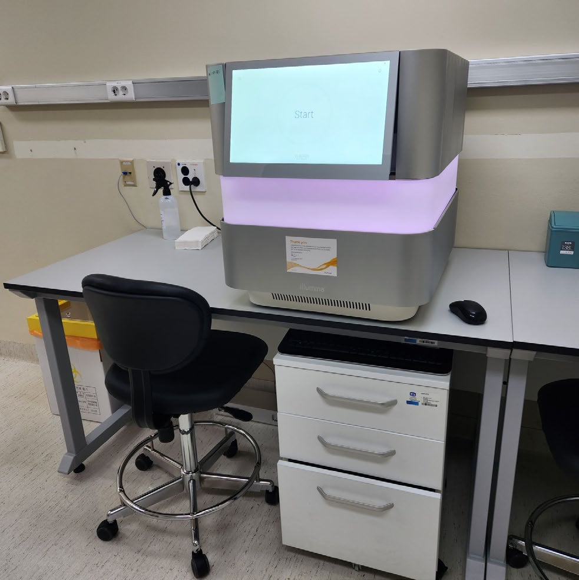

01Illumina
NextSeq™ 1000 Next-Generation Sequencer
- Based on sequencing-by-synthesis (SBS) chemistry, it accurately resolves homopolymer stretches and repeat sequences.
- Supports output from 10 Gb to 180 Gb and is compatible with third-party library preparation reagents.
- The on-board DRAGEN Bio-IT Platform carries the workflow through secondary analysis.